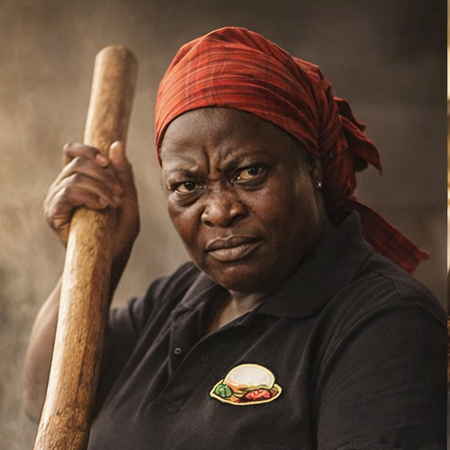

Considering our respect for Nshima, we made sure to recruit experts in the field of cuisine
Meet the Team

Mama Chanda - Head Cook
This is Mama Chanda. Her NRC actually reads Mama Chanda. She's isn't a fan of talking but she's as gentle as they come. Our recruitment team discovered her and her talent at a local funeral. She cooks with love and she is the definition of loyalty. She's a valued asset. And yes, that is the actual size of the cooking stick.
Kabuswe, Shem and Tasha
Kabuswe (left), Shem (middle) and Tasha (right). These make up the service team. Taking order, cleanup after meals, billing, dishes and so on. They somehow never tire and always look happy. They are there to serve you. You may be wondering how a full restaurant has a service team of only three people? That's where the Management Team comes in.
Ngosa and Daniel
Ngosa (left)and Daniel (right). The managers. This duo makes up the management team. They are in charge of all restaurant activities. That includes cooking, service, accounts and security.